Since last 4 years, I had been using WordPress for hosting my blogs. It is great platform for beginners to begin with blogging. However, I have migrated from WordPress to Distill blog.
What is Distill?
Distill is a web publishing format used for scientific and technical writing. Using Rmarkdown, you can create a distill blog or website.
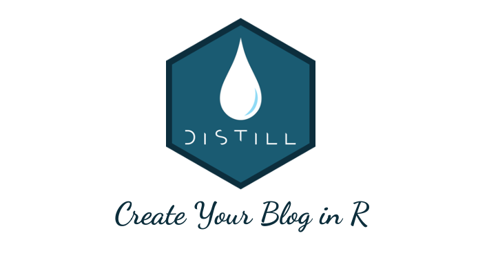
Why use Distill for Blog?
Distill is based on Distill web framework. It combines the technical writing features of Distill with R Markdown. You’ll find distill awesome because they’re:
Simple in design: Distill is simple in design. It’s typography and design adapts well in Mobile.
Host for free: You need to pay certain fees to host your website right. But not so with Distill. It generates static html page. It means, we can host our website for free. You can choose with GitHub Pages, Netlify or any hosting providers who offers free web page hosting.
Fast and Secure: Distill is a static site generator. So, it doesn’t have any server side processing like (PHP, MySQL in WordPress). The html pages are served instantly and are secure in nature.
Support technical writing: Out of box, distill comes with LaTeX math, citation, footnotes, acknowledgment, and bibliography support. So, it’s great for publishing your technical writings and scientific publications.
Open Source Blogging: We can open source our blog. Anyone can submit their pull request to suggest changes in the blog.
You can find more detailed about the distill features here.
Steps for Creating/Hosting Distill Blog
You can easily create and host Distill blog in R using RStudio.
1. Install Distill R Package
First, you need to install Distill R package.
{} install.packages(“distill”)
2. Create a Distill Project
Now on your RStudio (top-left), File > New Project > Create Distill Blog.
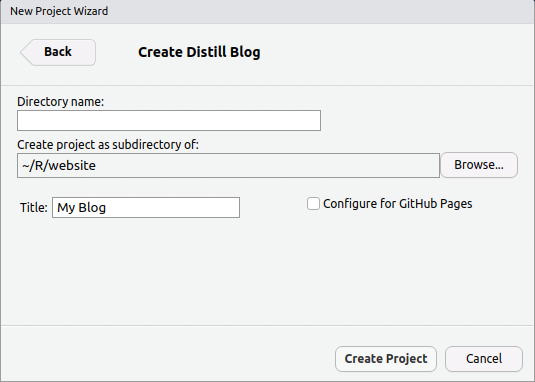
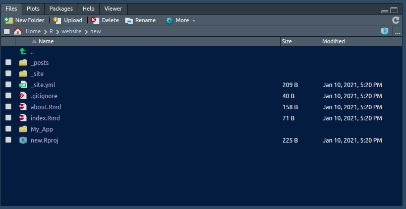
You can configure your blog setting with _site.yml file.
{} name: “Binod Jung Bogati” title: “My Data Science Blog” description: | Hi, I’m Data Scientist at Numeric mind. This is my blog about Rstats and Data Science. output_dir: “_site” navbar: right: - text: “Home” href: index.html - text: “About” href: about.html distill::distill_article
3. Creating Distill Blog Post
You can create new distill blog post using create_post() function. To skip date prefix (10-01-2021), you can set it to NULL as below.
{} distill::create_post(“Creating Distill Blog in R”, date_prefix = NULL)
After that, distill will generate Rmarkdown file inside a folder. You can change your name and add content in your post.
Once you’re done with changes, you may knit your article/post (Ctrl+Shift+K).
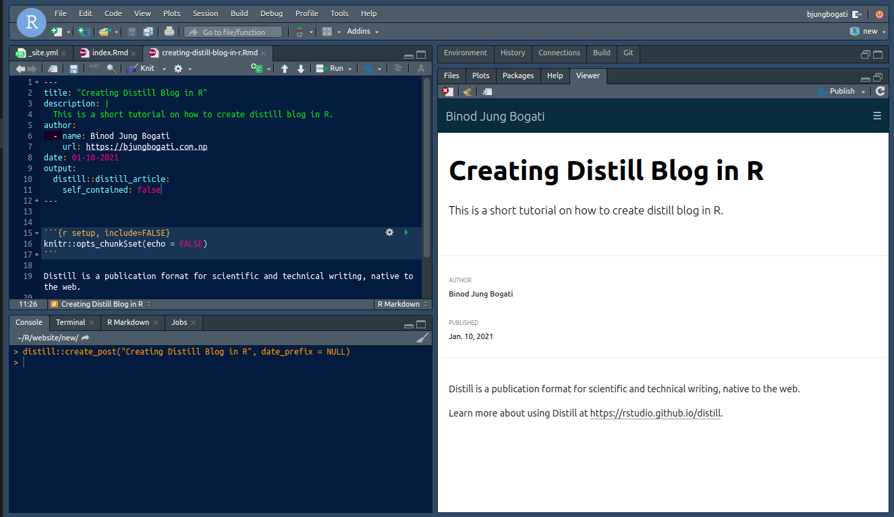 You can open index.Rmd file from Files (right-bottom). Then knit the index.Rmd file to generate a Home page (index.html).
Note: All the blog posts are located at the **_posts** directory.
4. Setup Distill Repository
We are going to create GitHub Repository for our distill blog. This is because, we can update our blog with git push.
- First visit, to create a new repository.
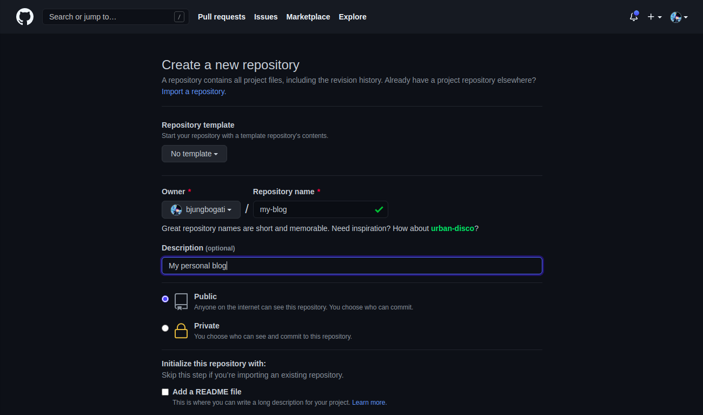
- After that, copy git remote add origin command.
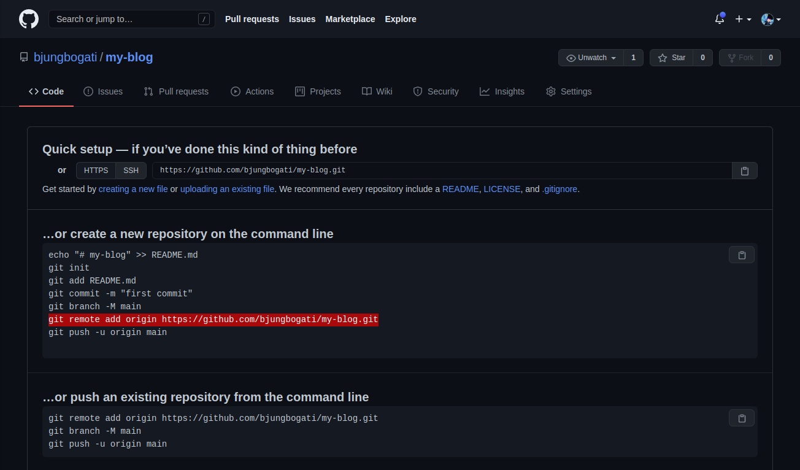 - Go to Tools > Terminal > New Terminal (Alt+Shift+R). Then, push all your changes to GitHub.
You can refer guide to upload project in GitHub.
{} git add . git commit -m “added new blog” git remote add origin https://github.com/bjungbogati/my-blog.git git push -u origin master
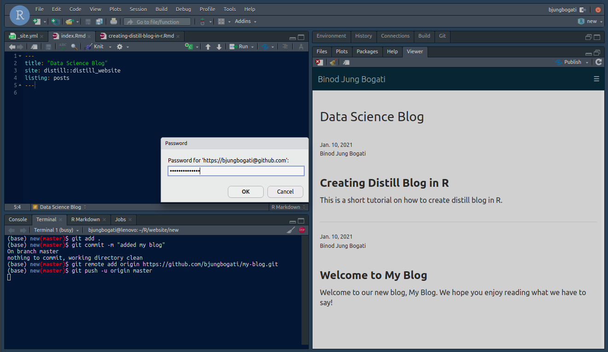
5. Host Your Distill Blog
We can easily host our distill blog, once it’s available on GitHub repository. Here, we’re going to use Netlify (instead of GitHub Pages).
First signup to Netlify.com
After login, add New site from Git > Connect to GitHub > Pick repository with distill blog.
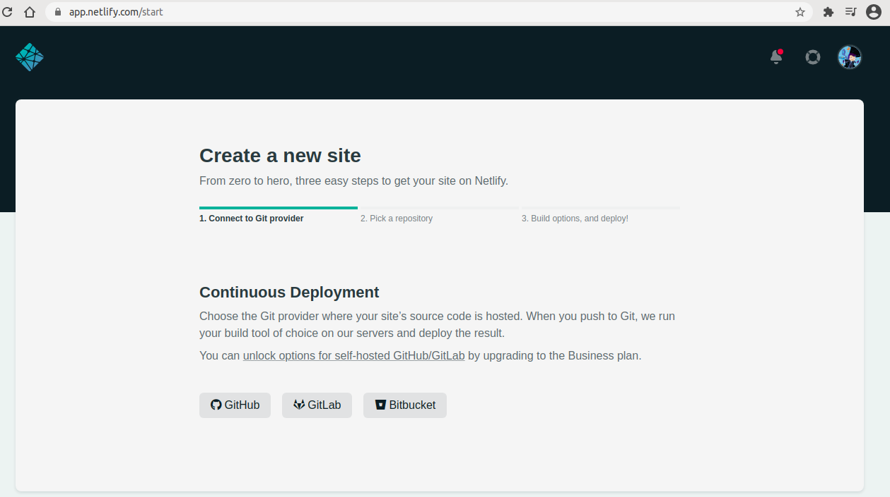 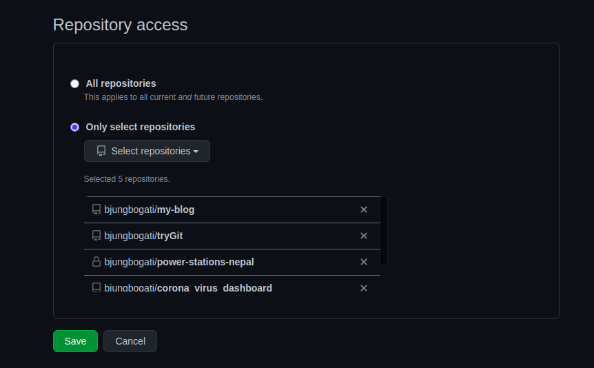
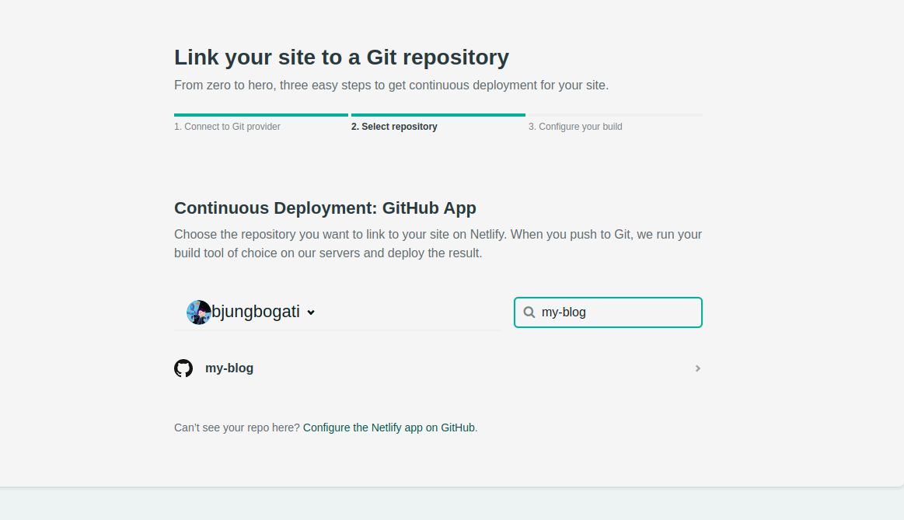
- Now you can host your distill blog at Netlify. For that, you need to set branch to deploy master and publish directory _site.
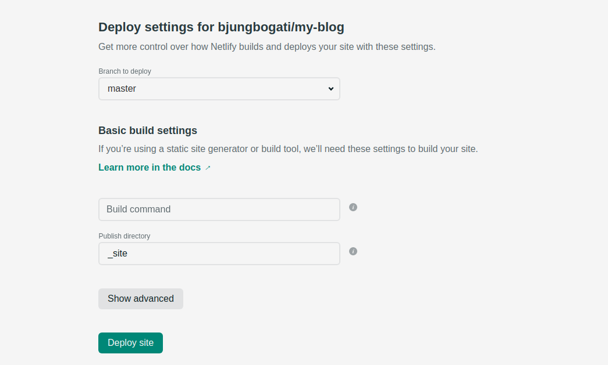
- After deployment, you’ll see your netlify dashboard for your blog.
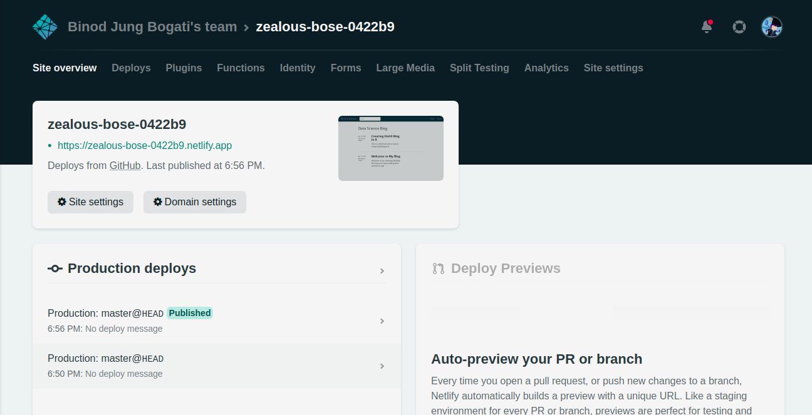
- You click and see live preview of your blog with link generated by netlify.app (above).
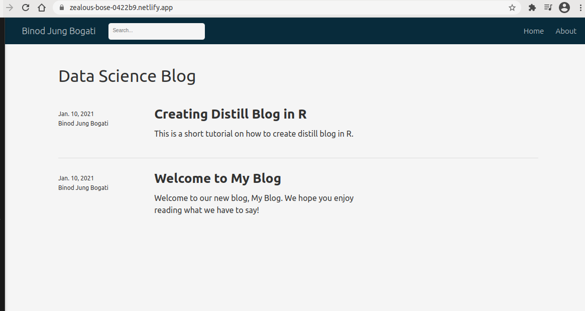
- You can add custom domain from domain settings in Netlify.
Customize Distill Blog
In Distill, you can customize your blog theme with style.css.